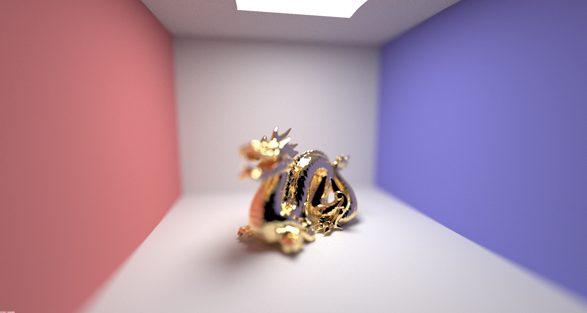

In this part of the project, I implemented reflection and refraction material BSDF's and I implemented camera depth effects. For the reflection and refraction material BSDF implementation, I implemented the sampling method of reflect/refracted rays. For the camera depth effects, I applied the ray physics of an ideal thin lens to sample pixel rays from various areas on an imaginary ideal thin lens. This part of the project was very interesting because it allowed me to implement more than just diffuse lighting in my raytracing program. This allowed me to render very cool images that had light reflections, refractions, and even depth effects.
To implement mirror and glass materials, I first had to implement both reflection and refraction sampling. For reflection sampling, I simply took the incoming ray and set the outgoing ray's object space x and y coordinates to be the negative of the incoming ray's. I then set the z value equal to the incoming ray's. For refraction sampling, I first set eta equal to ior and then checked to see if the incoming ray was entering or exiting the non-air material. If the incoming ray was entering the non-air material, I set eta to 1 / ior. Then I simply performed the mathematical calculations to determine if there was total internal reflection. If there was, I returned false and if there wasn't, I returned the refracted ray as calculated by the formula provided in the spec.
Here is a sequence of 6 images of CBspheres.dae rendered with 64 samples per pixel and 4 samples per light:
In the image rendered with max_ray_depth equal to zero, there is no light. The entire image is dark except for the light source. This makes sense because there should not be any light visible other than from the light source. In the image with ray depth equal to 1, we see the colored walls and two black spheres with a shiny portion on top of the spheres. This is because only light that has been bounced once is visible. This means the diffuse lighting from the walls should be visible and the specular part of the spheres should be visible. The shadows of the spheres are also very harsh because there is no indirect lighting. Starting at ray depth 2, we see some interesting developments. On the sphere on the left, we can see the reflection of the walls and the other sphere. This makes sense as this is the light that has bounced off the walls/sphere and then off the mirror-like sphere again. As for the other sphere, we start to partially see both some reflection of the walls and the other sphere. The shadows of the spheres on the ground also appear to be slightly lighter as more indirect lighting is incorporated into the scene. Starting at a ray depth of 3 and going higher, we see that the sphere on the left continues to reflect the surrounding and the sphere on the right starts to refract the light from around the room. As the max_ray_depth increases, so does the overall brightness of the image. However, there are diminishing returns in scene lighting as the ray depth increases. The reason we can only see the refraction in the ball on the right after 3 bounces is because the light first has to bounce off the wall or the other sphere, refract through the sphere, and then refract out of the sphere. This technically counts as three bounces. Some other interesting details are that at ray depth of three, we see a light under the sphere on the right as if the sphere is magnifying the rays of light from the light source onto the ground. This is for the same reason we can see refractions through the glass sphere. Light enters the sphere, travels through the sphere, exits the sphere, and bounces off the ground and back at the camera. At level four and higher, we see the same phenomenon but slightly smaller on the blue wall to the right. This is the light that bounced off the mirror sphere, entered the glass sphere, exited the glass sphere, and then bounced off the wall towards the camera. From level 5 and onwards, there aren't as many exciting developments. The scene gets slightly brighter and the shadows become less harsh as more indirect lighting is included.
In project 3-1, we assumed the camera model to be a pinhole camera. This means that all light in the scene passes through a pinhole to the camera sensor. Because of this, all objects in the scene are equally sharp as each sensor pixel has only one possible incoming ray direction. However, if we use the thin-lens camera model, only light from a specific focal length will be in focus at the image sensor. Using a thin-lens camera model, a sensor pixel may receive incoming radiance from a number of places on the lens. As a result, the only light that perfectly converges on a sensor pixel from the lens is at a specific focal length. All objects not at the focal length will experience some distortion in pixel value accuracy (causing a blurry effect). To implement this effect, I first determined the camera space ray that points from the camera position towards the scene. Using this ray, I calculated the intersection with the focal plane and called this point pFocus. Afterwards, I used the randomly sampled radius and angle value to determine a place on the lens to set as the generated ray origin. Using this information, I created a ray that originated from the sample lens position and went towards the direction of pFocus. With this ray, I converted both the origin and direction to world space coordinates and added the camera position to the origin position. This is the ray that we then send into the scene to calculate intersections and radiance. By sampling rays generated from generate_ray_for_thin_lens(...), we can simulate ray tracing sensor pixel values through the lens of a camera.
All images in part 4 were rendered at 1920x1080 and then resized for the website/pdf.
Here is a series of four rendered images of CBdragon.dae at various focal lengths with a lens aperture of .10, 128 samples per pixel, four samples per light, and a max_ray_depth of 12:

Here is a series of four rendered images of CBdragone.dae at various aperture sizes with the camera focused at the middle of the dragon using 128 samples per pixel, four samples per light, and a max_ray_depth of 12:
For the images rendered at .10 aperture, you can clearly see the parts of the image that are out of focus. In the last one, you can see the back corner of the wall in focus while the entire dragon and the rest of the room is out of focus. For the images rendered focused at the middle of the dragon but with various apertures, greater the lens size, the greater the blurry effect was on the non-focused portions of the scene. This is because with a larger lens, each pixel value is sampled from a wider range of points in the scene causing an almost low-pass filtered effect on the parts of the scene not at the focal length.
https://cal-cs184-student.github.io/sp22-project-webpages-alexanderyu217/proj3-2/index.html